Previous: Risk Management | 🏠 Strategy Home | Next: Serving in the System
Roger Federer and Rafael Nadal: Round 3 2006
Comprehensive unified tennis knowledge base — Fundamentals, Stroke Analysis, Reference Library, and more
Roger Federer and Rafael Nadal: Round 3 2006
John Yandell
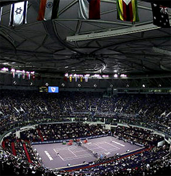
It was Shanghai not Arthur Ashe Stadium.
Well, it wasn't the U.S. Open final. In fact it wasn't a final. It was the semi-final of the Masters Cup in Shanghai. But it was another showdown between Roger Federer and Rafael Nadal. And it wasn't on clay or grass. When last we left them the question was, having split the French and Wimbledon finals, what would happen if these two wonderful players met again this year on a hard court?
So now we have an answer. In case you just came out of a coma, Federer won in Shanghai, 6-4, 7-5. Hopefully Roger and Rafael will play that Open final next year or even a few Open finals sometime before they both retire. But this meeting was a pretty good consolation prize, because it was on a more neutral court, somewhere between grass and clay in terms of the bounce.
The Shanghai court wasn't an asphalt based hard court like the Open. According to Roger it was actually slower than the outdoor hardcourt in Dubai where Rafael won in their first meeting of the year. It's an indoor cushioned court, which uses an underlying pad as a base, usually some form of carpet or foam, but is then finished with acrylic paint and sand like a hard court.
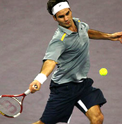
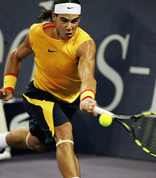
Usually, it's laid down on top of a cement arena floor. But the way the ball sounded in Shanghai I wondered if the sub surface below the pad wasn't something different, possibly even wood. There was a hollow sound to the ball bounce, and also to the sound of the players' feet, but it was hard to tell if that was really about the court, or just the audio broadcast from China. The reason I mention all this is because this type of court plays like a medium slow hard court, but with a somewhat lower bounce. If the subsurface was wood or something other than concrete, it would probably make the ball bounce even lower.
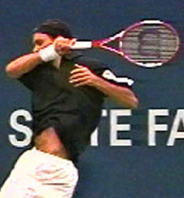
Both players hammered most balls.
I've played on a similar court quite a few times, including the one at the SAP Open in San Jose. It's a great surface! Pete Sampras once called it "his favorite surface" and said that he felt the particular combination of speed and bounce was "a fair court" for all types of players. If you have a conservative grip like Pete or Roger, you get time to swing, and you also get most of the balls in your strike zone and not so high up.
So you'd think that would favor Roger, and that was the way it turned out. The obvious insight is that when the bounce is lower, Nadal's ball can't cause Roger the same problems, especially on the backhand side. Both players are getting balls they can basically hammer most of the time. But unless the bounce is high, the artillery exchange seems to favor Roger.
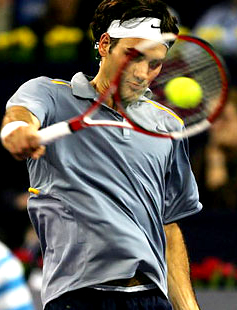
Roger didn't have to play so many backhands quite so high.
But not by much. The match had unbelievable backcourt exchanges in which the players battled for control, with multiple rallies of over a dozen balls or more. The exchanges were mainly side to side and included a lot of inside forehands by both players. But there was a sprinkling of up and back points and these probably played a decisive role in the outcome, as we'll discuss below.
The other factor that may have been less obvious was how Federer stayed with Nadal step for step in these incredible exchanges. People rightly talk about Nadal's speed and court coverage. But in this match Federer's movement was as good, if not a little better. Time after time, he played incredible defense and then made a lightening transition to offense.
Roger's success in defending made an immediate impression on Nadal. Early in the match, Nadal played most points from 10 or 12 feet behind the baseline. He was so far back that half his body was dropping below that annoying ESPN 2 update ticker at the bottom of the screen.
That lasted until Nadal got down 4-1 in the first, when he seemingly made a conscious decision to move in and play the ball sooner. So, thankfully, you could actually see his whole body for almost every point for the rest of the match.
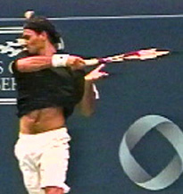
Court coverage so incredible you don't even notice.
The thing about Roger's movement is that he makes it look so easy people don't notice what he is really doing. I've said it before, but it really reminds me of the young John McEnroe. Observers were so amazed by McEnroe's shot making genius, they overlooked the phenomenal quickness and that put him in the positions to do the beautiful things he did.
Match point in Shanghai was a perfect example. Nadal hit a second serve to start the point, and Roger hit a short backhand return down the line. Nadal tried to jump on it, got around the ball and hit a deep inside out forehand. On the dead run, Roger was able to hit a looping crosscourt forehand, but it landed at about the service line. Nadal moved around this one too and drilled a forehand down the line inside in. Against most players either shot would have likely been a winner or at least drawn an error.
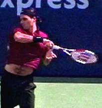
From defense to offense to match point winner.
But Roger was able to cover the second forehand too, going from one corner to other. This time he hit a crosscourt backhand. But again, it was short. So, Nadal attempted his third potential winner, this time a forehand drop shot up the line. The ball bounced a little deeper than he probably would have liked, but it had a ton of sidespin and curved out into the alley. So, for the third ball in a row, Roger was on the dead run, this time coming from the backhand corner and 4 or 5 feet behind the baseline.
By the time he got to the ball, it had dropped to maybe a foot above the court. He's out in the alley, only a few feet from the net with the ball down below his knees. And he rolls a perfect, gorgeous crosscourt forehand for a clean winner. The shot was an amazing combination of arc, pace, and angle. Nadal barely budged, and the match was over. It was actually startling, so much so that Pat Mac and Cliff Drysdale both let out the exact same spontaneous howl.
Roger had run down three balls covering the widest points on the court, transited to offense in a blinding flash, hit a brilliant artistic winner, clinched the match, and for all practical purposes, the Masters title as well. So yes, that was pretty great to watch and, yes again, thanks to Tivo, I have reviewed the sequence a few times.
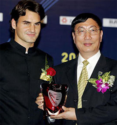
Shanghai: a new venue for brilliant world class tennis.
And that was just one of many similarly amazing points. Still watching the whole thing, I have to say it wasn't quite as exciting as it should have been. The crowd didn't really do its part. There was a certain lack of atmosphere you could feel through the tube. The Shanghai fans were appreciative, that's for sure. But you could also tell that they weren't really hard-core tennis fans. Why would they be? This is a new thing for them and a new venue, and a great thing for tennis. It just didn't have the same atmosphere it might in a few more years.
So, the crowd seemed to sense they were seeing something special, but they didn't really know how special. If Nadal and Federer played points like that in New York, it would cause mania, and afterwards the fans might tear down Arthur Ashe stadium out of sheer appreciation.
So, if this match was so great, what did the numbers show? Interestingly, that it wasn't statistically so exceptional, at least if you go by the Aggressive Margin. Remember that the Aggressive Margin shows how the points are won in terms of errors versus aggressive play. To get the Aggressive Margin, you add the number of winners to number of forced errors a player generates. The total number of winners and forced errors equals the number of points that player won through shotmaking or aggressive play.
Then you subtract the player's unforced errors. The result is the Aggressive Margin--winners plus forced errors less unforced errors. In pro tennis the number is almost always positive, but you can't say the same as you go downward through the levels of competitive tennis.
Aggressive Margin
French
Wimbledon
Shanghai
Federer
+2/set
+16/set
+8/set
Nadal
+5/set
+11/set
+2.5/set
In the Shanghai match, Roger ended up with an Aggressive Margin of +8/set and Nadal was +2.5/set. That's lower than the number for either player at Wimbledon, where Federer was +16/set and Nadal was +11/set. It was just slightly higher than the clay court match in Paris. In Paris, Nadal was +5/set and Roger was +2/set.
It's not particularly high for pro hard-court tennis, where the margin per set is often in the high teens or even low twenties. So, if it was such a great match, why wasn't the Aggressive Margin higher? Probably because of the quality and especially the duration of the baseline exchanges. And that goes back to the nature of the court.
There were plenty of winners in the Shanghai match, but also a lot of extraordinary exchanges that ended with unforced errors. An explanation for this comes from another new article in the December issue of Tennisplayer. It's by former pro player and coach Elliot Teltscher, on a concept he calls "Shot Tolerance." (Click Here.) Federer and Nadal traded one high speed shot after another and stretched the geometric boundaries of the court. Both played amazing defense, and because of that the points where frequently 10 hits or more. The last game of the match, for example included rallies that lasted for 16, 19, and 20 balls.
Shot tolerance can explain great points that end with unforced errors.
So, why did more of those types of points end with errors? According to Elliot all players have a personal limit to the number of quality shots they can hit in any given point. He calls this their "Shot Tolerance." And when a player hits his limit, even if it's Federer or Nadal, the points is going to end one way or another on the next ball. And if it's not with a winner or a forcing shot, then it will be with an error.
So, the longer the stand off went on in those amazing baseline exchanges, the closer both players got to the end of their shot tolerance. The speed of the court allowed them to exchange their best shots for a longer period on time, and it resulted in some great shots, but it also facilitated more errors.
Federer for example had 21 forehand winners and forced errors, but also made 14 unforced errors. It was similar for Nadal who had 15 forehand winners and forced errors, and 11 unforced errors. It's an intriguing concept because it explains why some of their killer points ended somewhat anti-climatically.
It might also apply to their match at the French, where Roger made a series of unforced backhand errors that seemed incongruous with the quality rest of the match. (Click Here.) Elliot thinks that this is how Nadal got under Federer's skin mentally earlier in the year, something most observers could just sense. After those tough clay court matches, Roger may have started to feel that Nadal had a higher shot tolerance, especially when so many of the balls Roger had to hit where those super tough, high backhands, coming in with heavy spin.
Following this line of reasoning, the lower bounce at Wimbledon and in Shanghai took just enough pressure off so Roger could hang longer, getting the chance to hit a few more winners himself, and push Nadal closer to his own tolerance levels.

The biggest statistical difference was at the net.
But there was another factor we mentioned at the top of this article, and that was the play in the forecourt and at the net. Federer won a total of 75 points over two sets. Nadal won 65. That was 10 points difference over 2 sets. Most of that difference can be explained by Roger's net play. He hit 10 volley and overhead winners and had 2 errors. So Roger was +8 for the match at the net. Nadal was barely up there and didn't have a winner or an error. So his number was zero. Those eight points Roger won at the net were more than enough to make the difference in the match.
They were also part of some his opportunity transitions from defense to offense, like the one amazing point Federer won on a low stretch backhand volley when Nadal was serving at 4-5 in the second.
Rafael hit a first serve in the ad court to Federer's backhand, and Roger drove it back down the middle. Nadal tried to hit an angled backhand crosscourt, but it was short and too much to the middle. Roger hit a forehand down the line that landed almost on the baseline. He didn't come in initially, but seeing that he had pushed Nadal back, he exploded forward and hit a monster swinging forehand volley crosscourt.
Nadal actually had no trouble reaching the ball and hit a low, laser backhand passing shot up the line into the open court. Federer was just as quick to cover the line, and then he hit that low stretch backhand volley for an angled winner. He made one of the toughest imaginable shots in tennis look ridiculously easy, and it must have felt like a knife in the heart for Rafael.
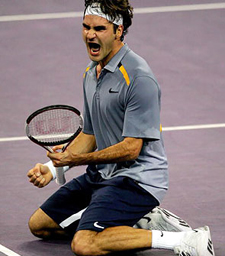
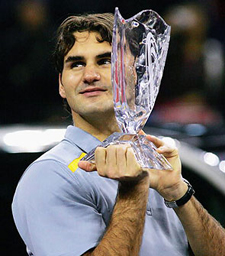
Roger's confidence after Shanghai is probably higher than ever.
So, what does it really all mean? Every match is different, and players play widely different statistical matches on different surfaces and even on the same surfaces. There is no way of knowing whether Roger has completely reversed the mental advantage Nadal had seemed to have in their rivalry. But the sense you get is that at least in his own mind he has, which is probably where it matters most. You could feel this in the relaxed, confident tone of Roger's interview after Shanghai. But I swear it started with that blazer at Wimbledon. (Click Here.)
I also think the shot exchanges between these two players--and they have the most contrast in playing styles since Borg and McEnroe--exposes one of the major misconceptions people have about tennis. When Federer is winning, it must be that compact groundstrokes and all court style are a better way to play. When Rafael is winning, then western grips and heavy topspin are invincible. I even know a tour player, who shall remain nameless, who has changed his swings, his tactics, and even his grips back and forth with the ups and downs in the rivalry.
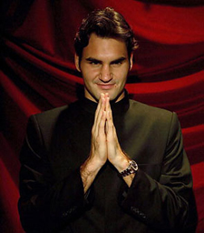
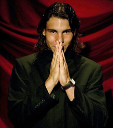
Join us all in praying for a few more matches.
But neither side of the argument is really true. In football, better offense wins against lesser defense. And better defense wins against lesser offense. Neither style is inherently superior, and there is always a counter move that, if executed, could reverse the outcome. It's the same thing in tennis. With Roger and Rafael, small differences in court surface and court position can shift the balance one way or the other, assuming both players still feel they are the best and have a chance to win.
So, let's hope they both feel that way for a while longer. Maybe we really will get that match at the U.S. Open next year, and maybe a few others as well. Amazingly they played in 5 finals in 2006 as well as the semi in Shanghai. Wouldn't it be fantastic to get that many matches again next year--or even 2 or 3 of them if the quality of the tennis and the psychodrama between the players is anything like what we've seen so far?

John Yandell is widely acknowledged as one of the leading videographers and students of the modern game of professional tennis. His high speed filming for Advanced Tennis and Tennisplayer have provided new visual resources that have changed the way the game is studied and understood by both players and coaches. He has done personal video analysis for hundreds of high level competitive players, including Justine Henin-Hardenne, Taylor Dent and John McEnroe, among others.
In addition to his role as Editor of Tennisplayer he is the author of the critically acclaimed book Visual Tennis. The John Yandell Tennis School is located in San Francisco, California.
Additional figures (from header/footer of source docx):

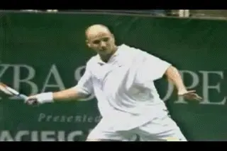

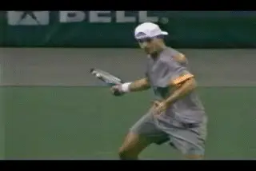

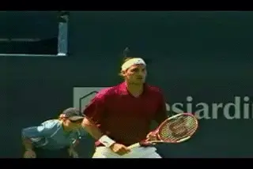

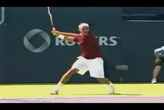

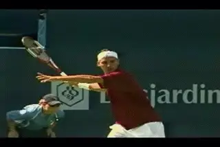
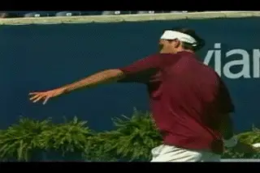
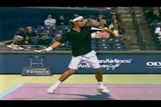
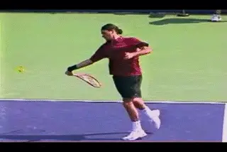


Source: tennisplayer.net archive — Roger Federer and Rafael Nadal Round 3 2006.docx (John Yandell teaching library, 2002-2022). Extracted and rendered as HTML for Tennis Future Lab.